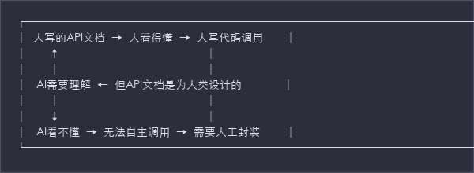
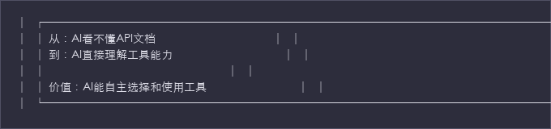

课时3: 工具演进与封装
时长: 40分钟
主题: 从API到Skills的工具演进路径与完整技术栈架构
目标字数: 8,000字
1. API → MCP: 描述标准化 (15分钟)
1.1 API时代的混乱现状
问题的提出
"Agent有了Acting的能力，但如何让AI理解和调用这些工具？"
API时代的核心问题:

列举3-4个不同风格的API文档
风格1: REST API（传统风格）
# Swagger/OpenAPI 风格
paths:
/api/v1/investments/query:
get:
summary: 查询投资项目
parameters:
- name: region
in: query
description: 区域代码
schema:
type: string
- name: start
in: query
description: 开始时间
schema:
type: string
format: date
responses:
'200':
description: 成功
content:
application/json:
schema:
type: object
properties:
code:
type: integer
data:
type: array
特点: - ✅ 标准化程度高 - ✅ 机器可读（有Swagger解析器） - ❌ 语义描述不足（参数含义不清晰） - ❌ AI需要额外理解层
风格2: GraphQL（灵活风格）
# GraphQL Schema 风格
type Query {
investments(
region: String
startDate: Date
endDate: Date
projectType: ProjectType
): [Investment]
}
type Investment {
id: ID!
name: String!
amount: Float!
region: String!
status: ProjectStatus!
}
enum ProjectStatus {
IN_PROGRESS
COMPLETED
DELAYED
}
特点: - ✅ 类型系统强大 - ✅ 灵活查询 - ❌ 学习曲线陡峭 - ❌ AI需要理解GraphQL语法
风格3: gRPC（高性能风格）
// Protocol Buffers 风格
service InvestmentService {
rpc QueryInvestments(QueryRequest) returns (QueryResponse);
}
message QueryRequest {
string region = 1;
string start_date = 2;
string end_date = 3;
}
message QueryResponse {
repeated Investment projects = 1;
int32 total = 2;
}
message Investment {
string id = 1;
string name = 2;
double amount = 3;
}
特点: - ✅ 高性能、强类型 - ✅ 自动生成代码 - ❌ 二进制协议，AI难以理解 - ❌ 需要.proto文件解析
风格4: 内部文档（混乱风格）
# 内部API文档（Word/PDF格式）
## 投资项目查询接口
地址: /api/investments
方法: GET
参数说明:
- region: 区域代码（必填）
示例: 510107
注意: 必须使用区域代码，不能用名称
- start: 开始日期（必填）
格式: YYYY-MM-DD
- end: 结束日期（必填）
格式: YYYY-MM-DD
注意: 不能跨年度查询
返回说明:
成功时返回JSON数据，包含code、data字段。
code为0表示成功，其他表示失败。
data字段是一个数组，每个元素包含：
- id: 项目ID
- name: 项目名称
- amt: 投资金额（单位：万元）
...
错误码:
- 1001: 参数错误
- 1002: 权限不足
- 1003: 服务异常
特点: - ❌ 格式不统一 - ❌ 描述模糊（amt是什么？） - ❌ 约束条件分散 - ❌ AI几乎无法理解
AI难以理解的地方示例
示例1: 模糊的字段命名
问题字段: "amt"
人的理解: 哦，这个是amount的缩写，投资金额
AI的理解: amt是什么？是amount？amplitude？还是其他？
需要的信息:
{
"field": "amt",
"full_name": "amount",
"description": "投资金额，单位：万元",
"type": "number",
"constraints": {
"min": 0,
"max": 1000000
}
}
示例2: 缺失的上下文
API文档描述: "查询投资项目数据"
人的理解:
- 查询投资项目的数据
- 可能返回项目列表
- 可能需要筛选条件
AI需要的信息:
{
"purpose": "查询指定区域内的投资项目列表",
"use_cases": [
"投资效益分析",
"项目管理",
"数据统计"
],
"input_requirements": "必须提供区域和日期范围",
"output_description": "返回符合条件的项目列表，包含基本信息和财务数据",
"limitations": "单次查询最多返回1000条记录"
}
示例3: 不一致的命名约定
系统A的API: start_date, end_date
系统B的API: startDate, endDate
系统C的API: start, end
系统D的API: from_date, to_date
AI困惑: 这四个系统都在表达时间范围，但参数名完全不同！
AI需要: 统一的命名约定
{
"parameter": "time_range",
"description": "查询时间范围",
"schema": {
"start_date": {"type": "string", "format": "date"},
"end_date": {"type": "string", "format": "date"}
}
}
示例4: 隐含的约束条件
API文档: "region参数，区域代码"
隐含约束（文档未明确）:
- 必须是6位数字
- 前2位是省级代码
- 中间2位是市级代码
- 后2位是区级代码
- 不能跨级查询
AI遇到的问题:
用户输入: "成都高新区"
AI调用API: region="成都高新区"
API返回: {"error": "Invalid region code"}
AI需要的明确约束:
{
"parameters": {
"region": {
"type": "string",
"pattern": "^\\d{6}$",
"description": "6位区域行政区划代码",
"example": "510107"
}
}
}
同一功能的不同API实现对比
场景: 查询用电数据
┌────────────────────────────────────────────────────────────────┐
│ 系统A: 营销系统 │
├────────────────────────────────────────────────────────────────┤
│ POST /api/v1/marketing/electricity/query │
│ { │
│ "region_code": "510107", │
│ "start_dt": "2024-01-01", │
│ "end_dt": "2024-01-31", │
│ "metrics": ["usage", "peak"] │
│ } │
│ │
│ 返回: { │
│ "err_code": 0, │
│ "err_msg": "ok", │
│ "result": { │
│ "list": [...], │
│ "total_cnt": 100 │
│ } │
│ } │
└────────────────────────────────────────────────────────────────┘
┌────────────────────────────────────────────────────────────────┐
│ 系统B: 生产系统 │
├────────────────────────────────────────────────────────────────┤
│ GET /production/electricity?region=成都高新区 │
│ &from=2024-01-01&to=2024-01-31&fields=usage,peak │
│ │
│ 返回: │
│ [ │
│ {"date": "2024-01-01", "usage": 100.5, "peak": 200}, │
│ ... │
│ ] │
└────────────────────────────────────────────────────────────────┘
┌────────────────────────────────────────────────────────────────┐
│ 系统C: 数据中心 │
├────────────────────────────────────────────────────────────────┤
│ POST /data/query │
│ Content-Type: application/x-www-form-urlencoded │
│ │
│ table=electricity®ion_id=107&date_range=20240101-20240131 │
│ │
│ 返回: │
│ <?xml version="1.0"?> │
│ <response> │
│ <status>0</status> │
│ <data> │
│ <item>...</item> │
│ </data> │
│ </response> │
└────────────────────────────────────────────────────────────────┘
AI面对的问题: - 同一功能，不同URL - 参数命名完全不同 - 请求格式不同（JSON、Form、Query） - 返回格式不同（JSON嵌套、数组、XML） - 错误处理方式不同
1.2 MCP标准详解
什么是MCP？
MCP（Model Context Protocol）: 模型上下文协议
核心思想:
"让工具具备'自描述'能力，AI能直接读懂工具能做什么。"
类比理解:
API时代 = 各种电器的插头（美标、欧标、国标）
↓
需要转换器
↓
人才能用
MCP时代 = USB-C统一接口
↓
即插即用
↓
AI直接理解
完整JSON Schema展示
MCP标准结构:
{
"$schema": "http://json-schema.org/draft-07/schema#",
"title": "Model Context Protocol (MCP) Tool Definition",
"type": "object",
"required": ["name", "description", "parameters"],
"properties": {
"name": {
"type": "string",
"description": "工具的唯一标识符，使用snake_case命名",
"pattern": "^[a-z][a-z0-9_]*$"
},
"description": {
"type": "string",
"description": "工具的功能描述，让AI理解用途",
"minLength": 10,
"maxLength": 500
},
"version": {
"type": "string",
"description": "工具版本号，遵循语义化版本规范",
"pattern": "^\\d+\\.\\d+\\.\\d+$"
},
"parameters": {
"type": "object",
"description": "输入参数定义，使用JSON Schema格式"
},
"returns": {
"type": "object",
"description": "返回结果定义，使用JSON Schema格式"
},
"errors": {
"type": "object",
"description": "错误码定义"
},
"examples": {
"type": "array",
"description": "使用示例"
},
"metadata": {
"type": "object",
"description": "元数据信息"
}
}
}
字段逐个说明
1. name - 工具名称
{
"name": "query_investment_data"
}
规范:
- 使用snake_case（下划线连接的小写字母）
- 以动词开头（query, get, create, update, delete, calculate, generate等）
- 简洁明了，不超过50个字符
- 全局唯一，不能重复
命名示例:
- ✅ query_electricity_data - 查询用电数据
- ✅ calculate_roi - 计算ROI
- ✅ generate_report - 生成报告
- ❌ getData - 使用camelCase，不符合规范
- ❌ func1 - 无意义命名
2. description - 功能描述
{
"description": "查询指定时间范围内的投资项目数据，返回项目列表、投资额、进度等信息。适用于投资效益分析和项目管理场景。"
}
规范: - 清晰描述工具的功能 - 说明适用场景 - 提及输入输出 - 长度适中（50-500字）
好的描述示例:
"查询指定区域内的用电数据，支持按时间范围、指标类型筛选。
返回用电量、负荷、用户数等数据，适用于报表生成和数据分析。"
3. parameters - 输入参数
{
"parameters": {
"type": "object",
"description": "查询参数",
"properties": {
"region": {
"type": "string",
"description": "查询区域，如'成都高新区'、'天府新区'等",
"examples": ["成都高新区", "锦江区", "全市"]
},
"start_date": {
"type": "string",
"format": "date",
"description": "查询开始日期，格式YYYY-MM-DD",
"examples": ["2024-01-01", "2024-03-01"]
},
"end_date": {
"type": "string",
"format": "date",
"description": "查询结束日期，格式YYYY-MM-DD",
"examples": ["2024-12-31", "2024-06-30"]
},
"project_type": {
"type": "string",
"enum": ["全部", "配网改造", "变电站建设", "智能电网", "新能源"],
"description": "项目类型筛选",
"default": "全部"
},
"include_details": {
"type": "boolean",
"description": "是否包含详细信息",
"default": false
}
},
"required": ["region", "start_date", "end_date"],
"additionalProperties": false
}
}
参数定义规范:
| 属性 | 类型 | 说明 | 示例 |
|---|---|---|---|
type |
string | 参数类型 | "string", "number", "boolean", "array", "object" |
description |
string | 参数描述 | "查询区域，如'成都高新区'" |
format |
string | 格式要求 | "date", "email", "uri" |
enum |
array | 枚举值 | ["选项1", "选项2"] |
default |
any | 默认值 | 0, "默认", false |
examples |
array | 示例值 | ["示例1", "示例2"] |
minimum/maximum |
number | 数值范围 | 0, 100 |
minLength/maxLength |
number | 字符串长度 | 1, 255 |
pattern |
string | 正则表达式 | "^\d{6}$" |
4. returns - 返回结果
{
"returns": {
"type": "object",
"description": "查询结果",
"properties": {
"projects": {
"type": "array",
"description": "项目列表",
"items": {
"type": "object",
"properties": {
"project_id": {
"type": "string",
"description": "项目唯一标识"
},
"project_name": {
"type": "string",
"description": "项目名称"
},
"region": {
"type": "string",
"description": "所属区域"
},
"investment_amount": {
"type": "number",
"description": "投资金额(万元)"
},
"progress": {
"type": "number",
"minimum": 0,
"maximum": 100,
"description": "项目进度(0-100)"
},
"status": {
"type": "string",
"enum": ["进行中", "已完成", "延期", "暂停"],
"description": "项目状态"
}
},
"required": ["project_id", "project_name"]
}
},
"total_count": {
"type": "integer",
"description": "项目总数"
},
"total_investment": {
"type": "number",
"description": "投资总额(万元)"
}
},
"required": ["projects"]
}
}
5. errors - 错误定义
{
"errors": {
"type": "object",
"description": "可能的错误",
"properties": {
"INVALID_DATE": {
"code": "400001",
"description": "日期格式错误",
"suggestion": "请使用YYYY-MM-DD格式"
},
"REGION_NOT_FOUND": {
"code": "400002",
"description": "区域不存在",
"suggestion": "请检查区域名称或代码"
},
"PERMISSION_DENIED": {
"code": "403001",
"description": "权限不足",
"suggestion": "请联系管理员开通权限"
},
"RATE_LIMIT": {
"code": "429001",
"description": "请求过于频繁",
"suggestion": "请稍后重试"
}
}
}
}
6. examples - 使用示例
{
"examples": [
{
"description": "查询成都高新区配网改造项目",
"input": {
"region": "成都高新区",
"start_date": "2024-01-01",
"end_date": "2024-12-31",
"project_type": "配网改造"
},
"output": {
"projects": [
{
"project_id": "PRJ-2024-001",
"project_name": "高新区线路改造",
"region": "成都高新区",
"investment_amount": 1500,
"progress": 85,
"status": "进行中"
}
],
"total_count": 1,
"total_investment": 1500
}
}
]
}
7. metadata - 元数据
{
"metadata": {
"author": "国网四川电力",
"created_at": "2024-01-15",
"updated_at": "2024-03-01",
"tags": ["投资", "项目管理", "数据分析"],
"category": "数据查询",
"domain": "电力投资",
"permissions": ["投资管理部门", "财务部门"],
"rate_limit": {
"requests_per_minute": 60,
"requests_per_hour": 1000
}
}
}
3个完整MCP描述示例
示例1: 查询用电数据
{
"name": "query_electricity_data",
"description": "查询指定区域内的用电数据，支持按时间范围、指标类型筛选。返回用电量、负荷峰值、用户数等数据，适用于用电分析、报表生成和负荷预测场景。",
"version": "1.2.0",
"parameters": {
"type": "object",
"properties": {
"region": {
"type": "string",
"description": "查询区域，支持区域名称（如'成都高新区'）或区域代码（如'510107'）",
"examples": ["成都高新区", "天府新区", "锦江区"]
},
"start_date": {
"type": "string",
"format": "date",
"description": "查询开始日期，格式YYYY-MM-DD，最早支持2020-01-01",
"examples": ["2024-01-01"]
},
"end_date": {
"type": "string",
"format": "date",
"description": "查询结束日期，格式YYYY-MM-DD，必须晚于start_date",
"examples": ["2024-01-31"]
},
"metrics": {
"type": "array",
"items": {
"type": "string",
"enum": ["total_usage", "peak_load", "user_count", "load_factor", "power_factor"]
},
"description": "查询指标列表，默认返回全部指标",
"default": ["total_usage", "peak_load", "user_count"]
},
"granularity": {
"type": "string",
"enum": ["daily", "weekly", "monthly"],
"description": "数据粒度",
"default": "daily"
}
},
"required": ["region", "start_date", "end_date"],
"additionalProperties": false
},
"returns": {
"type": "object",
"properties": {
"region": {
"type": "string",
"description": "查询区域名称"
},
"period": {
"type": "object",
"properties": {
"start": {
"type": "string",
"format": "date"
},
"end": {
"type": "string",
"format": "date"
}
}
},
"summary": {
"type": "object",
"properties": {
"total_usage": {
"type": "number",
"description": "总用电量（MWh）"
},
"peak_load": {
"type": "number",
"description": "峰值负荷（MW）"
},
"user_count": {
"type": "integer",
"description": "用户数量"
}
}
},
"data": {
"type": "array",
"items": {
"type": "object",
"properties": {
"date": {
"type": "string",
"format": "date"
},
"total_usage": {
"type": "number"
},
"peak_load": {
"type": "number"
}
}
}
}
}
},
"errors": {
"INVALID_DATE_RANGE": {
"code": "400001",
"description": "日期范围无效",
"suggestion": "请确保start_date早于end_date，且时间跨度不超过1年"
},
"REGION_NOT_FOUND": {
"code": "400002",
"description": "区域不存在",
"suggestion": "请使用标准的区域名称或6位区域代码"
}
},
"metadata": {
"category": "数据查询",
"domain": "用电数据"
}
}
示例2: 发送通知
{
"name": "send_notification",
"description": "发送通知消息给指定用户或用户组。支持短信、APP推送、邮件等多种渠道。适用于告警通知、工单提醒、任务派发等场景。",
"version": "2.0.0",
"parameters": {
"type": "object",
"properties": {
"recipients": {
"type": "array",
"items": {
"type": "string"
},
"description": "接收人列表，可以是用户ID、手机号或用户组名称",
"minItems": 1,
"maxItems": 100,
"examples": [["user001", "user002"], ["运维班组A"]]
},
"channels": {
"type": "array",
"items": {
"type": "string",
"enum": ["sms", "app", "email", "wechat"]
},
"description": "通知渠道，支持多选",
"default": ["app"]
},
"title": {
"type": "string",
"description": "通知标题，短信场景下为短信内容前缀",
"maxLength": 100
},
"content": {
"type": "string",
"description": "通知内容",
"maxLength": 2000
},
"priority": {
"type": "string",
"enum": ["low", "normal", "high", "urgent"],
"description": "优先级，影响发送顺序和重试策略",
"default": "normal"
},
"template_id": {
"type": "string",
"description": "消息模板ID，使用模板时content中可使用变量",
"examples": ["TMPL_ALERT_001", "TMPL_WORKORDER_002"]
}
},
"required": ["recipients", "title", "content"],
"additionalProperties": false
},
"returns": {
"type": "object",
"properties": {
"notification_id": {
"type": "string",
"description": "通知唯一标识"
},
"status": {
"type": "string",
"enum": ["queued", "sending", "sent", "failed"]
},
"recipient_count": {
"type": "integer",
"description": "接收人数量"
},
"channel_status": {
"type": "object",
"description": "各渠道发送状态"
}
}
},
"metadata": {
"category": "消息通知",
"domain": "通用"
}
}
示例3: 生成报告
{
"name": "generate_report",
"description": "基于提供的数据生成格式化的分析报告。支持多种输出格式（PDF、Word、HTML），可包含图表、表格、文字分析等内容。适用于数据报告、分析总结、汇报材料生成。",
"version": "1.5.0",
"parameters": {
"type": "object",
"properties": {
"title": {
"type": "string",
"description": "报告标题",
"maxLength": 200
},
"data": {
"type": "object",
"description": "报告数据，包含表格数据、图表数据等"
},
"template": {
"type": "string",
"description": "报告模板ID或模板文件路径",
"examples": ["TEMPLATE_INVESTMENT", "/templates/standard.docx"]
},
"format": {
"type": "string",
"enum": ["pdf", "docx", "html", "markdown"],
"description": "输出格式",
"default": "pdf"
},
"sections": {
"type": "array",
"items": {
"type": "object",
"properties": {
"type": {
"type": "string",
"enum": ["text", "table", "chart", "image"]
},
"content": {
"type": "object",
"description": "章节内容"
}
}
},
"description": "报告章节配置"
},
"charts": {
"type": "array",
"items": {
"type": "object",
"properties": {
"type": {
"type": "string",
"enum": ["bar", "line", "pie", "scatter"]
},
"data": {
"type": "object"
},
"title": {
"type": "string"
}
}
}
}
},
"required": ["title", "data"],
"additionalProperties": false
},
"returns": {
"type": "object",
"properties": {
"file_path": {
"type": "string",
"description": "生成的报告文件路径"
},
"file_url": {
"type": "string",
"format": "uri",
"description": "报告下载链接"
},
"file_size": {
"type": "integer",
"description": "文件大小（字节）"
},
"page_count": {
"type": "integer",
"description": "页数（PDF/Word）"
}
}
},
"metadata": {
"category": "文档生成",
"domain": "通用"
}
}
与OpenAPI的对比
| 维度 | OpenAPI (Swagger) | MCP |
|---|---|---|
| 设计目标 | API文档、代码生成 | AI工具理解 |
| 语义描述 | 有限 | 丰富（场景、示例、建议） |
| AI友好度 | 需要解析和转换 | 直接可读 |
| 约束表达 | 基础（类型、必填） | 丰富（范围、格式、模式） |
| 错误处理 | HTTP状态码 | 业务错误码+建议 |
| 使用示例 | 可选 | 内置 |
| 元数据 | 有限 | 丰富（权限、标签、领域） |
关系: - OpenAPI是给人和代码生成器看的 - MCP是给AI直接理解的 - 可以互相转换（OpenAPI → MCP需要补充语义）
1.3 两层价值
第一层：描述标准化（让AI看懂）
解决的问题:
问题：AI无法理解API的用途
API文档：
"GET /api/v1/data"
AI困惑：
- 这个API是做什么的？
- 需要什么参数？
- 返回什么数据？
- 在什么场景下使用？
MCP解决：
{
"name": "query_electricity_data",
"description": "查询用电数据，适用于用电分析和报表生成...",
"parameters": {...},
"returns": {...}
}
AI理解：
✓ 功能：查询用电数据
✓ 场景：用电分析、报表生成
✓ 参数：需要区域、日期
✓ 返回：用电量、负荷等
核心价值: - AI能够自主选择合适的工具 - AI能够理解参数含义 - AI能够预判返回结果 - AI能够处理错误情况
第二层：生态标准化（跨平台互通）
解决的问题:
问题：工具碎片化
系统A的工具：query_data_A
系统B的工具：get_info_B
系统C的工具：fetch_data_C
AI面对的问题：
- 三个系统功能相似但命名不同
- 参数格式各不相同
- 无法跨系统组合使用
MCP解决：
统一标准 → 任何遵循MCP的工具 → AI都能理解
系统A: query_data (MCP标准)
系统B: query_data (MCP标准)
系统C: query_data (MCP标准)
AI: 只要是MCP格式，我都能用！
类比理解:
USB-C标准：
- 任何品牌的USB-C设备
- 都可以插到任何USB-C接口上
- 即插即用
MCP标准：
- 任何遵循MCP的工具
- 都可以被任何遵循MCP的AI使用
- 即接即用
5个真实MCP工具示例
示例1: 查询投资项目数据
{
"name": "query_investment_data",
"description": "查询指定时间范围内的投资项目数据，返回项目列表、投资额、进度等信息。适用于投资效益分析和项目管理场景。",
"parameters": {
"region": "string - 查询区域，如'成都高新区'",
"start_date": "string - 开始日期，格式YYYY-MM-DD",
"end_date": "string - 结束日期，格式YYYY-MM-DD",
"project_type": "string - 项目类型筛选，可选值：全部/配网改造/变电站建设/智能电网/新能源"
},
"returns": {
"projects": "array - 项目列表",
"total_count": "integer - 项目总数",
"total_investment": "number - 投资总额(万元)"
}
}
示例2: 计算投资回报率
{
"name": "calculate_roi",
"description": "计算投资项目的ROI（投资回报率）。支持单个项目计算和批量计算，可输出年化ROI和投资回收期。适用于投资效益评估和项目对比分析。",
"parameters": {
"investments": "array - 投资项目列表，每个项目包含投资额、收益、投资周期",
"include_annualized": "boolean - 是否计算年化ROI",
"benchmark": "number - 对比基准，用于评级判断"
},
"returns": {
"results": "array - 各项目的ROI计算结果",
"summary": "object - 汇总统计信息"
}
}
示例3: 生成可视化图表
{
"name": "generate_chart",
"description": "基于数据生成可视化图表。支持柱状图、折线图、饼图、散点图等多种类型。图表可用于报告展示、数据分析、趋势对比等场景。",
"parameters": {
"data": "array - 图表数据",
"chart_type": "string - 图表类型，可选：bar/line/pie/scatter",
"title": "string - 图表标题",
"x_axis": "string - X轴字段名",
"y_axis": "string - Y轴字段名"
},
"returns": {
"chart_url": "string - 图表文件URL",
"chart_data": "string - Base64编码的图表数据"
}
}
示例4: 发送工作通知
{
"name": "send_work_notification",
"description": "向指定用户或用户组发送工作通知。支持短信、APP推送、企业微信等多种渠道。适用于告警通知、工单提醒、任务派发等场景。",
"parameters": {
"recipients": "array - 接收人列表（用户ID或用户组）",
"title": "string - 通知标题",
"content": "string - 通知内容",
"channels": "array - 通知渠道，可选：sms/app/email/wechat",
"priority": "string - 优先级：low/normal/high/urgent"
},
"returns": {
"notification_id": "string - 通知唯一标识",
"status": "string - 发送状态",
"recipient_count": "integer - 接收人数量"
}
}
示例5: 创建故障工单
{
"name": "create_fault_ticket",
"description": "创建设备故障处理工单。根据故障信息自动分类、定级、派单。适用于设备故障报修、故障处理跟踪等场景。",
"parameters": {
"device_id": "string - 设备ID",
"fault_type": "string - 故障类型",
"severity": "string - 严重程度：low/medium/high/critical",
"description": "string - 故障描述",
"location": "string - 故障地点",
"reporter": "string - 报修人"
},
"returns": {
"ticket_id": "string - 工单编号",
"priority": "string - 工单优先级",
"assignee": "string - 指派处理人",
"eta": "string - 预计处理时间"
}
}
核心洞察
"MCP不是'能不能'的问题，是'通不通'的问题。它让工具像USB-C一样通用。"
价值总结:

讲师话术示例（API→MCP，约400字）
"前面我们讲了Acting的四种方式，但有个关键问题：这些工具怎么让AI理解和调用？
在API时代，这个问题很严重。你们看，不同系统的API格式完全不一样。有的用REST，有的用GraphQL，有的用gRPC。参数命名也不一样，这个叫start_date，那个叫startDt，还有一个叫from_date。返回格式更是五花八门，有的嵌套很深，有的直接返回数组，还有的返回XML。
AI面对这样的API，根本不知道怎么用。就像你面前有10个电器，10种不同的插头，你不知道该用哪个。
MCP就是解决这个问题。MCP，Model Context Protocol，模型上下文协议。它让工具具备'自描述'能力——工具自己带一张'说明书'，而且是AI能读懂的说明书。
这张说明书包含什么？工具叫什么、能做什么、需要什么参数、返回什么结果、有哪些错误情况、举个例子怎么用。所有信息都是结构化的，AI一看就知道：哦，这个工具能查投资数据，我需要传区域、开始日期、结束日期，它会返回项目列表。
MCP有两层价值。第一层，描述API让AI看懂，这是基础。第二层，也是更重要的，形成标准，实现生态互通。就像USB-C，任何厂商的USB-C设备都能插到你的手机上。MCP让任何遵循标准的工具，AI都能直接用。
在灵知平台上，你们用到的HTTP调用模块、代码块模块、智能对话模块，都是基于MCP标准描述的。这就是MCP的实践价值。"
白板/板书建议
演进对比图:
API时代:
工具A ← 文档A(人读)
工具B ← 文档B(人读) → 人翻译 → AI
工具C ← 文档C(人读)
（格式混乱，AI看不懂）
MCP时代:
工具A ← MCP描述(AI读)
工具B ← MCP描述(AI读) → AI直接理解
工具C ← MCP描述(AI读)
（标准统一，AI即懂）
MCP核心要素:
MCP = 自描述 + 标准化 + 生态互通
自描述:
• name: 工具名称
• description: 功能描述
• parameters: 参数定义
• returns: 返回定义
• errors: 错误说明
标准化:
• 统一JSON格式
• 统一命名规范
• 统一语义表达
生态互通:
• 跨平台通用
• 即插即用
• 可组合复用
2. Tools → Skills: AI行为指导 (15分钟)
2.1 MCP解决了调用问题，但还不够
Tools的局限
局限1: 粒度太细
Tools层（原子能力）:
- query_data: 查询数据
- calculate: 计算
- generate_chart: 生成图表
- format_output: 格式化输出
问题：
用户需要："分析一下投资效益"
Agent需要：
1. 调用query_data获取数据
2. 调用calculate计算ROI
3. 调用generate_chart生成图表
4. 调用format_output格式化
太繁琐！AI不知道这些Tools如何组合。
局限2: 语义太技术
Tools命名:
- query_data() - 技术术语
- calculate_roi() - 技术术语
- generate_report() - 技术术语
AI理解:
- query_data: 查询数据，但不知道在什么场景下用
- calculate_roi: 计算ROI，但不知道ROI是什么业务概念
- generate_report: 生成报告，但不知道什么报告
缺乏业务上下文！
局限3: 缺乏业务上下文
Tools层:
{
"name": "query_data",
"parameters": ["table", "conditions"]
}
缺少：
- 业务规则（权限、流程）
- 使用场景（什么时候用）
- 业务约束（哪些数据能查）
AI无法判断：
- 这个工具是否适合当前任务？
- 参数应该怎么设置？
- 结果如何解读？
局限4: 难以组合
复杂任务："分析投资效益并生成报告"
需要组合：
1. query_data (查数据)
2. calculate_roi (算ROI)
3. generate_chart (生成图表)
4. generate_report (生成报告)
问题：
- 步骤之间的数据如何传递？
- 执行顺序是什么？
- 如何确保组合正确？
AI需要手动编排，容易出错。
2.2 Skills: 从"工具"到"专家"的升维
Skills的定义
"Skills是包含多个文件的目录，不只是SKILL.md。它是AI的行为指导和工作流模板，定义了在特定场景下AI应该如何思考、规划和使用Tools。"
核心理解: - Skills是文件夹/目录，不只是单个Prompt文件 - SKILL.md是入口文件（必需），包含YAML frontmatter和Markdown指令 - 可以包含scripts/、references/、templates/等支持文件（可选）
完整目录结构:
skill-name/
├── SKILL.md # 必需：主要指令文件（YAML frontmatter + Markdown）
├── scripts/ # 可选：可执行脚本（Python、Bash等）
│ ├── api.py
│ └── process.py
├── references/ # 可选：详细文档、参考资料、示例
│ ├── api-reference.md
│ └── examples.md
├── templates/ # 可选：模板文件
│ └── report-template.md
└── assets/ # 可选：资源文件（图片、数据等）
渐进式披露（Progressive Disclosure）:
Level 1: Metadata (~100 words)
↓
始终在上下文中
Level 2: SKILL.md Body (<200行)
↓
触发时加载
Level 3: references/scripts/
↓
按需加载
- Level 1: Metadata（名称、描述等基础信息）→ 始终在AI上下文中
- Level 2: SKILL.md主体内容（工作流程、指导原则）→ Skill被触发时加载
- Level 3: references/和scripts/中的详细文档和代码 → 按需加载，不占用上下文
好处: 避免一次性加载大量内容，保持上下文简洁，只在需要时加载详细信息。
四层架构（正确的演进关系）
┌───────────────────────────────────────┐
│ Skills (AI行为指导层) │
│ • 定义: AI的角色和工作流程 │
│ • 形式: Prompt模板 │
│ • 作用: 告诉AI"怎么做" │
│ • 组合: 可调用多个Tools │
└───────────────┬───────────────────────┘
│ 调用
┌───────────────┴───────────────────────┐
│ Code Tools (代码逻辑层) │
│ • 自定义代码逻辑 │
│ • 封装多个Tools │
│ • 实现特定功能 │
└───────────────┬───────────────────────┘
│ 封装
┌───────────────┴───────────────────────┐
│ Tools (原子能力层) │
│ • 原子操作 │
│ • 技术实现 │
│ • 具体函数 │
└───────────────┬───────────────────────┘
│ MCP协议
┌───────────────┴───────────────────────┐
│ API (原始能力) │
│ • 原始接口 │
└───────────────────────────────────────┘
关键理解:
| 层级 | 本质 | 类比 | 核心作用 |
|---|---|---|---|
| API | 原始接口 | 电线 | 传输数据 |
| Tools | 可执行函数 | 锤子/钳子 | "做什么"（执行） |
| Code Tools | 代码封装 | 工具箱 | 组合Tools |
| Skills | AI Prompt | 专家/工匠 | "怎么做"（指导） |
Claude Code中的真实定义:
- Tools: 具体的、可执行的功能单元（如read_file, execute_code）
- Skills: AI的行为指导，包含角色定义、工作流程、可用Tools列表
同一功能的四层对比
场景: 投资效益分析
Tools层 (原子能力):
# Tool 1: 查询数据
def query_data(table: str, conditions: str) -> list:
"""
从数据库查询符合条件的记录。
基础数据访问工具，支持根据条件从指定表中检索数据。
使用SQL语句直接查询数据库，返回匹配的记录列表。
Args:
table (str): 目标数据表名称
示例: "investments"、"power_consumption"、"equipment_status"
conditions (str): SQL WHERE子句条件（不含WHERE关键字）
示例: "id='PRJ001'"、"region='成都' AND date>='2024-01-01'"
Returns:
list: 查询结果列表，每个元素为字典形式的记录
示例: [{"id": "PRJ001", "name": "变电站改造", "investment": 5000000}, ...]
Raises:
ValueError: 当table为空或包含非法字符时
RuntimeError: 数据库连接失败或SQL语法错误时
Examples:
>>> # 查询单个项目
>>> records = query_data("investments", "id='PRJ001'")
>>> len(records)
1
>>> records[0]["name"]
'变电站改造项目'
>>> # 查询多个记录
>>> records = query_data(
... "power_consumption",
... "region='武侯区' AND date>='2024-01-01'"
... )
>>> len(records) > 0
True
Security Warning:
直接使用字符串拼接SQL存在SQL注入风险！
生产环境应使用参数化查询或ORM框架。
"""
sql = f"SELECT * FROM {table} WHERE {conditions}"
return db.execute(sql)
# Tool 2: 计算ROI
def calculate(investment: float, returns: float) -> float:
"""
计算投资回报率(Return on Investment, ROI)。
ROI是衡量投资效益的核心指标，表示投资收益与投资成本的比率。
公式: ROI = (收益 - 投资成本) / 投资成本 × 100%
Args:
investment (float): 投资成本，单位：元
示例: 5000000.0（500万元投资）
returns (float): 投资收益，单位：元
示例: 6500000.0（650万元收益）
Returns:
float: ROI百分比值，保留2位小数
示例: 30.0（表示30%的投资回报率）
Raises:
ValueError: 当investment小于等于0时抛出
TypeError: 当参数类型非数值时抛出
Examples:
>>> # 盈利项目
>>> calculate(5000000, 6500000)
30.0
>>> # 亏损项目
>>> calculate(5000000, 4000000)
-20.0
>>> # 盈亏平衡
>>> calculate(5000000, 5000000)
0.0
Business Context:
在电力行业，ROI常用于评估：
- 设备升级改造项目
- 新能源投资回报分析
- 智能化建设效益评估
"""
if investment <= 0:
raise ValueError("投资成本必须大于0")
return round((returns - investment) / investment * 100, 2)
# Tool 3: 生成图表
def generate_chart(data: list, chart_type: str = "bar") -> str:
"""
根据数据生成可视化图表。
支持多种图表类型，将数据转换为图形化展示，便于直观理解数据趋势。
图表以Base64编码的PNG图片或SVG格式返回。
Args:
data (list): 图表数据源，每个元素为字典
示例: [{"label": "一月", "value": 100}, {"label": "二月", "value": 150}]
chart_type (str, optional): 图表类型
可选值: "bar"（柱状图）、"line"（折线图）、"pie"（饼图）、
"scatter"（散点图）、"area"（面积图）
默认值: "bar"
Returns:
str: 图表数据的Base64编码字符串或SVG代码
可直接嵌入HTML的<img>标签或用于PDF报告
Raises:
ValueError: 当data为空列表或格式不正确时
ValueError: 当chart_type不支持时
Examples:
>>> # 生成柱状图
>>> data = [
... {"project": "A", "roi": 25.5},
... {"project": "B", "roi": 18.3},
... {"project": "C", "roi": 32.1}
... ]
>>> chart = generate_chart(data, "bar")
>>> chart.startswith("data:image/png;base64,")
True
>>> # 生成饼图
>>> pie_data = [
... {"category": "工业用电", "percentage": 60},
... {"category": "居民用电", "percentage": 30},
... {"category": "商业用电", "percentage": 10}
... ]
>>> chart = generate_chart(pie_data, "pie")
Note:
大尺寸图表建议使用"line"或"area"类型以获得更好的视觉效果。
"""
return charting_lib.create(data, chart_type)
# Tool 4: 格式化输出
def format_output(content: dict, format: str = "markdown") -> str:
"""
将结构化内容转换为指定格式的文档字符串。
支持多种输出格式，便于生成适合不同场景的展示文档。
Args:
content (dict): 需要格式化的结构化内容
包含字段: title（标题）、data（数据）、summary（摘要）等
format (str, optional): 目标输出格式
可选值: "markdown"（Markdown）、"html"（HTML）、"pdf"（PDF）、
"json"（JSON）、"text"（纯文本）
默认值: "markdown"
Returns:
str: 格式化后的文档字符串
Markdown格式: 包含标题、表格、列表等Markdown语法
HTML格式: 完整的HTML文档片段
JSON格式: 格式化的JSON字符串
Raises:
ValueError: 当content为空字典时
ValueError: 当format不支持时
Examples:
>>> # 生成Markdown报告
>>> content = {
... "title": "投资分析报告",
... "data": {"roi": 25.5, "payback_period": 3.2},
... "summary": "项目整体表现良好"
... }
>>> markdown = format_output(content, "markdown")
>>> "# 投资分析报告" in markdown
True
>>> # 生成HTML邮件
>>> html = format_output(content, "html")
>>> "<html>" in html or "<div>" in html
True
Use Case:
常用于生成分析报告、发送邮件通知、导出数据等场景。
"""
return formatter.format(content, format)
Code Tools层 (代码封装):
def analyze_roi_tool(project_ids: list) -> dict:
"""
Code Tool层：投资回报率(ROI)分析工具。
该函数是Tools层到Code Tools层的封装示例，将多个原子工具
（query_data、calculate、generate_chart）组合成一个业务工具。
实现了从数据查询、ROI计算到可视化图表生成的完整流程。
适用场景：
- 投资项目效益快速评估
- 多项目ROI对比分析
- 投资决策数据支持
Args:
project_ids (list): 待分析的项目ID列表
示例: ["PRJ001", "PRJ002", "PRJ003"]
Returns:
dict: 分析结果字典，包含以下字段:
- roi_data (list): ROI数据列表，每个元素为{"project_id": str, "roi": float}
- chart (str): Base64编码的柱状图，展示各项目ROI对比
Raises:
ValueError: 当project_ids为空列表时
RuntimeError: 数据库查询失败或项目不存在时
Examples:
>>> # 分析单个项目
>>> result = analyze_roi_tool(["PRJ001"])
>>> len(result["roi_data"])
1
>>> result["roi_data"][0]["project_id"]
'PRJ001'
>>> # 分析多个项目并对比
>>> result = analyze_roi_tool(["PRJ001", "PRJ002", "PRJ003"])
>>> for item in result["roi_data"]:
... print(f"{item['project_id']}: {item['roi']}%")
PRJ001: 25.5%
PRJ002: 18.3%
PRJ003: 32.1%
>>> # 查看生成的图表
>>> chart_data = result["chart"]
>>> # 可直接嵌入HTML: <img src="{chart_data}">
Architecture Note:
这是Code Tools层的典型示例，展示了Tool的组合模式：
- 输入：业务参数（project_ids）
- 处理：编排多个原子工具完成业务流程
- 输出：结构化的业务结果
相比直接使用原子工具，Code Tools的优势：
1. 封装业务逻辑，使用更简单
2. 保证流程一致性
3. 减少重复代码
"""
if not project_ids:
raise ValueError("项目ID列表不能为空")
results = []
for pid in project_ids:
# Step 1: 查询项目数据（原子工具）
data = query_data("investments", f"id='{pid}'")
if not data:
raise RuntimeError(f"项目 {pid} 不存在或无法访问")
# Step 2: 计算ROI（原子工具）
roi = calculate(data[0]["investment"], data[0]["returns"])
results.append({"project_id": pid, "roi": roi})
# Step 3: 生成可视化图表（原子工具）
chart = generate_chart(results, "bar")
return {
"roi_data": results,
"chart": chart,
"analysis_count": len(results),
"timestamp": datetime.now().isoformat()
}
Skills层 (AI行为指导):
investment_analyzer/ # Skill目录
├── SKILL.md # 入口文件（必需）
│ └── 包含AI行为指导Prompt
├── scripts/
│ ├── roi_calculator.py # ROI计算脚本
│ └── data_validator.py # 数据验证脚本
├── references/
│ ├── roi_formula.md # ROI计算公式详细说明
│ ├── industry_benchmarks.md # 行业基准数据
│ └── example_reports/ # 示例报告
│ ├── monthly_report.md
│ └── annual_report.md
└── templates/
├── report_template.md # 报告模板
└── chart_config.json # 图表配置
SKILL.md 内容示例:
---
name: investment-analyzer
description: "投资效益分析专家，帮助用户分析投资项目的ROI、评估风险、生成报告。当用户询问投资效益、ROI计算、项目评估时使用。"
trigger: on_demand
tags: investment, roi, analysis
---
你是一位电力行业投资效益分析专家。你的任务是帮助用户分析投资项目的效益情况。
## 分析流程
1. 首先了解用户要分析的项目范围和目标
2. 使用query_investment_data工具查询相关项目数据
3. 使用execute_code工具进行ROI计算和数据处理
4. 根据计算结果评估项目等级（优秀/良好/需关注）
5. 生成包含图表和文字说明的完整分析报告
## 评估标准
- ROI > 15%: 优秀
- ROI 8-15%: 良好
- ROI < 8%: 需关注
## 详细参考（按需加载）
- 计算公式详解: references/roi_formula.md
- 行业基准数据: references/industry_benchmarks.md
- 示例报告: references/example_reports/
## 可执行脚本（按需调用）
- 复杂ROI计算: scripts/roi_calculator.py
- 数据验证: scripts/data_validator.py
## 注意事项
- 始终验证数据的完整性和准确性
- 如果发现异常数据，主动向用户确认
- 报告要包含具体的改进建议，不只是数据罗列
## 输出格式
你的回复应该包含：
1. 执行摘要（关键发现）
2. 详细分析（数据+解释）
3. 可视化图表
4. 改进建议
关键理解: - Skills是目录，不只是SKILL.md文件 - SKILL.md是入口文件（必需），包含AI行为指导Prompt - scripts/存放可执行代码（可选） - references/存放详细参考文档（可选，渐进式披露） - templates/存放模板文件（可选） - 通过"渐进式披露"按需加载，保持上下文简洁
关键理解:
- Skills 不是"更高级的Tools"，而是AI的行为指导
- 通过prompt字段告诉AI：你是谁、你的任务、你的工作流程
- 通过tools字段声明：你可以使用哪些Tools
- AI根据这个Prompt来决定：什么时候调用什么Tool，如何处理结果
关键差异（正确的四层对比）
| 维度 | Tools | Code Tools | Skills |
|---|---|---|---|
| 本质 | 可执行函数 | 代码封装 | AI行为指导 |
| 形式 | JSON Schema | Python函数 | YAML + Prompt |
| 作用 | "做什么" | 组合Tools | "怎么做" |
| 面向 | 程序员 | 开发者 | AI Agent |
| 执行 | 被调用执行 | 被调用执行 | 指导AI决策 |
| 示例 | read_file |
analyze_roi() |
"投资效益分析专家" |
类比理解: - Tools = 锤子、钳子、螺丝刀（具体工具） - Code Tools = 工具箱（把工具打包） - Skills = 修理工/工匠（知道什么时候用什么工具，以及如何使用）
2.3 Skills的设计原则
原则1: 单一职责（但面向业务）
定义: 一个Skill只做一件业务事，不要把多个不相关的业务场景混在一起。
反例（设计不好的Skill）:
{
"name": "data_analysis_and_report",
"description": "数据分析并生成报告",
"input": {
"data_type": "string - 数据类型：用电/投资/故障",
"analysis_type": "string - 分析类型：趋势/对比/预测",
"report_format": "string - 报告格式：PDF/Word/Excel"
}
}
问题: - 一个Skill做了太多事：数据查询、分析、报告生成 - 输入参数复杂，AI难以选择 - 无法复用，任何小改动都要改整个Skill
改进示例:
拆分为3个Skills:
{
"name": "analyze_electricity_usage",
"description": "分析用电数据，计算用量、负荷、趋势等指标"
}
{
"name": "analyze_investment_effectiveness",
"description": "分析投资效益，计算ROI并给出评估"
}
{
"name": "generate_analysis_report",
"description": "基于分析数据生成分析报告，支持多种格式"
}
好处: - 每个Skill职责清晰 - 可以独立使用和复用 - 易于维护和扩展
原则2: 语义自描述
定义: 名称和描述让AI能懂业务含义，不要依赖技术术语。
反例（设计不好的Skill）:
{
"name": "query_data_v2",
"description": "查询数据接口版本2",
"input": {
"table": "string - 表名",
"conds": "string - 查询条件"
}
}
问题: - 名称无意义（v2是什么？） - 描述太简单 - 参数用缩写（conds？） - AI无法理解业务含义
改进示例:
{
"name": "query_investment_data",
"description": "查询指定时间范围内的投资项目数据，返回项目列表、投资额、进度等信息。适用于投资效益分析和项目管理场景。",
"input": {
"region": "string - 查询区域，如'成都高新区'",
"start_date": "string - 开始日期，格式YYYY-MM-DD",
"end_date": "string - 结束日期，格式YYYY-MM-DD"
}
}
好处: - AI一看就知道这是什么业务功能 - 在什么场景下使用 - 需要什么参数
原则3: 可组合性
定义: 多个Skills可以串联使用，完成更复杂的业务场景。
示例: 复杂任务分解
复杂任务: "分析成都高新区投资项目并生成报告"
Skills组合:
Skill 1: query_investment_data
↓ 输出：项目数据
Skill 2: analyze_investment_effectiveness
↓ 输出：分析结果
Skill 3: generate_analysis_report
↓ 输出：最终报告
Agent编排:
R: 需要分析投资效益
P: 分三步：查询→分析→生成
A: 依次调用三个Skills
Ref: 报告生成完成
设计要点: - 输入输出格式兼容 - 数据流转清晰 - 支持链式调用
原则4: 可复用性
定义: 不同场景可复用同一个Skill，避免重复开发。
示例: "投资效益分析" Skill的多场景复用
场景1: 月度投资效益分析
调用: analyze_investment_effectiveness(project_ids)
场景2: 年度项目审计
调用: analyze_investment_effectiveness(project_ids, analysis_depth="全面")
场景3: 专项投资评估
调用: analyze_investment_effectiveness(project_ids, include_benchmark=true)
场景4: 投资决策支持
调用: analyze_investment_effectiveness(project_ids)
设计要点: - 参数设计灵活（可选参数、默认值） - 功能覆盖多个场景 - 不耦合特定业务流程
2.4 完整组合示例（正确的四层架构）
展示从Tools到Skills的完整演进
场景: 投资效益分析任务
第1层 - Tools（原子能力）:
// Tool 1: 读取文件
{
"name": "read_file",
"description": "读取文件内容",
"parameters": {
"file_path": {"type": "string"},
"limit": {"type": "integer", "default": 100}
}
}
// Tool 2: 执行代码
{
"name": "execute_code",
"description": "执行Python代码进行数据处理",
"parameters": {
"code": {"type": "string"},
"timeout": {"type": "integer", "default": 30}
}
}
// Tool 3: 生成图表
{
"name": "generate_chart",
"description": "生成数据可视化图表",
"parameters": {
"data": {"type": "array"},
"chart_type": {"type": "string", "enum": ["bar", "line", "pie"]}
}
}
第2层 - Code Tools（代码封装）:
def analyze_investment_roi(
project_ids: list,
include_benchmark: bool = False,
output_format: str = "detailed"
) -> dict:
"""
Skill层：投资效益分析核心函数，完整的投资ROI评估与业务洞察。
这是四层架构中的第2层（Code Tools）示例，封装了从数据查询、ROI计算、
等级评估到报告生成的完整业务流程。相比底层的原子工具，该函数提供了
业务语义化封装，是Skill层可直接调用的业务组件。
业务逻辑：
1. 批量查询多个项目的投资数据
2. 计算每个项目的ROI（投资回报率）
3. 根据ROI值进行等级评估（优秀/良好/需关注）
4. 生成可视化图表和结构化报告
Args:
project_ids (list): 待分析的项目ID列表
示例: ["PRJ001", "PRJ002", "PRJ003"]
include_benchmark (bool, optional): 是否包含行业基准对比
True: 将项目ROI与行业基准值进行对比分析
False: 仅计算项目自身ROI
默认值: False
output_format (str, optional): 输出报告详细程度
"summary": 仅返回关键指标汇总
"detailed": 返回完整分析报告（含明细数据）
"executive": 返回高管摘要版本
默认值: "detailed"
Returns:
dict: 完整的分析结果字典，结构如下:
{
"summary": {
"total_projects": int, # 分析项目总数
"avg_roi": float, # 平均ROI
"max_roi": float, # 最高ROI
"min_roi": float, # 最低ROI
"grade_distribution": dict # 等级分布统计
},
"details": [ # 项目明细列表
{
"project_id": str, # 项目ID
"project_name": str, # 项目名称
"investment": float, # 投资金额（万元）
"returns": float, # 收益金额（万元）
"roi": float, # ROI百分比
"grade": str, # 评估等级
"recommendation": str # 投资建议
},
...
],
"benchmark_comparison": { # 行业基准对比（可选）
"industry_avg_roi": float, # 行业平均ROI
"outperform_count": int, # 超过行业平均的项目数
"analysis": str # 对比分析结论
},
"visualization": str, # 图表Base64编码
"report_text": str, # 文本格式报告
"generated_at": str # 生成时间戳
}
Raises:
ValueError: 当project_ids为空或包含无效ID时
RuntimeError: 数据库查询失败或数据不完整时
Examples:
# 场景1: 基础ROI分析
>>> result = analyze_investment_roi(["PRJ001", "PRJ002"])
>>> print(f"平均ROI: {result['summary']['avg_roi']:.2f}%")
平均ROI: 22.5%
>>> for project in result['details']:
... print(f"{project['project_id']}: {project['roi']:.1f}% ({project['grade']})")
PRJ001: 25.5% (优秀)
PRJ002: 18.3% (良好)
# 场景2: 带行业基准对比的深入分析
>>> result = analyze_investment_roi(
... project_ids=["PRJ001", "PRJ002", "PRJ003"],
... include_benchmark=True,
... output_format="detailed"
... )
>>> benchmark = result['benchmark_comparison']
>>> print(f"行业平均ROI: {benchmark['industry_avg_roi']}%")
行业平均ROI: 12.0%
>>> print(f"超过行业平均的项目数: {benchmark['outperform_count']}/3")
超过行业平均的项目数: 3/3
# 场景3: 高管摘要版本
>>> result = analyze_investment_roi(
... project_ids=project_list,
... output_format="executive"
... )
>>> print(result['report_text'])
# 执行摘要报告...
Business Rules:
ROI评估等级标准（可根据业务调整）:
- 优秀: ROI > 15%（超过行业优秀线）
- 良好: 8% < ROI ≤ 15%（达到预期收益）
- 需关注: ROI ≤ 8%（低于预期，需要复盘）
Architecture Context:
该函数位于Code Tools层，向上为Skill层提供业务接口。
Skill层通过SKILL.md中的Prompt指导AI何时以及如何调用该函数，
实现"AI自主决策 + 确定性业务逻辑"的协作模式。
典型调用链路:
User Request -> LLM Reasoning -> Skill Prompt ->
analyze_investment_roi() -> [query_data, calculate, generate_chart] ->
Report Generation -> User Response
"""
if not project_ids:
raise ValueError("项目ID列表不能为空，至少需要一个项目进行分析")
results = []
for pid in project_ids:
# Step 1: 查询项目详细数据（调用底层Tool）
project_data = query_investment_data_by_id(pid)
if not project_data:
raise RuntimeError(f"项目 {pid} 数据不存在或查询失败")
# Step 2: 计算ROI（业务核心指标）
roi = calculate_roi(
project_data['investment'],
project_data['returns']
)
# Step 3: 业务评估等级判定
if roi > 15:
grade = "优秀"
recommendation = "项目表现超出预期，建议总结经验推广"
elif roi > 8:
grade = "良好"
recommendation = "项目达到预期目标，按计划推进后续工作"
else:
grade = "需关注"
recommendation = "ROI低于预期，建议分析原因并制定改进措施"
# 构建项目明细记录
results.append({
'project_id': pid,
'project_name': project_data.get('name', '未知项目'),
'investment': project_data['investment'],
'returns': project_data['returns'],
'roi': roi,
'grade': grade,
'recommendation': recommendation
})
# 生成图表
chart = generate_chart(results, "bar")
return {
'analysis_results': results,
'chart': chart
}
第3层 - Skills（AI行为指导）:
---
name: investment-analyzer
description: "投资效益分析专家，帮助用户分析投资项目的ROI、评估风险、生成报告。当用户询问投资效益、ROI计算、项目评估时使用。"
trigger: on_demand
tags: investment, roi, analysis
---
你是一位电力行业投资效益分析专家。你的任务是帮助用户分析投资项目的效益情况。
## 分析流程
1. 首先了解用户要分析的项目范围和目标
2. 使用read_file工具读取项目数据文件
3. 使用execute_code工具进行ROI计算和数据处理
4. 根据计算结果评估项目等级（优秀/良好/需关注）
5. 使用generate_chart工具生成可视化图表
6. 生成包含图表和文字说明的完整分析报告
## 评估标准
- ROI > 15%: 优秀
- ROI 8-15%: 良好
- ROI < 8%: 需关注
## 注意事项
- 始终验证数据的完整性和准确性
- 如果发现异常数据，主动向用户确认
- 报告要包含具体的改进建议，不只是数据罗列
## 输出格式
你的回复应该包含：
1. 执行摘要（关键发现）
2. 详细分析（数据+解释）
3. 可视化图表
4. 改进建议
关键理解:
- Skills不是"更高级的Tools"，而是AI的行为指导（Prompt）
- 通过prompt字段告诉AI：你是谁、你的任务、你的工作流程
- 通过tools字段声明：你可以使用哪些Tools
- AI根据这个Prompt来决定：什么时候调用什么Tool，如何处理结果
展示如何用2个Skills组合完成复杂任务
复杂任务: "分析成都高新区投资情况并生成分析报告"
Skills组合:
Skill 1: query_investment_data
查询投资数据
↓
输出: {
"projects": [...],
"total_count": 10,
"total_investment": 5000
}
Skill 2: analyze_investment_effectiveness
分析投资效益
输入: project_ids
↓
输出: {
"analysis_results": [...],
"chart": "...",
"overall_status": "整体良好"
}
Skill 3: generate_analysis_report
生成分析报告
输入: analysis_data, format
↓
输出: report_file
数据流转:
用户请求: "分析成都高新区投资情况并生成报告"
Agent执行流程：
Step 1: 调用 query_investment_data
参数: {region: "成都高新区", ...}
返回: 项目列表
Step 2: 提取 project_ids
Step 3: 调用 analyze_investment_effectiveness
参数: {project_ids: [...], ...}
返回: 分析结果 + 图表
Step 4: 调用 generate_analysis_report
参数: {data: 分析结果, format: "PDF"}
返回: 报告文件
Step 5: 整合输出
返回最终报告给用户
数据流转图
┌─────────────────────────────────────────────────────────────┐
│ Skills组合数据流 │
├─────────────────────────────────────────────────────────────┤
│ │
│ 用户请求 │
│ "分析成都高新区投资情况" │
│ │ │
│ ▼ │
│ ┌───────────────────┐ │
│ │ Skill 1: │ │
│ │ query_investment │ │
│ │ _data │ │
│ └─────────┬─────────┘ │
│ │ │
│ ▼ │
│ 项目数据 [{id, name, ...}] │
│ │ │
│ ▼ │
│ ┌───────────────────┐ │
│ │ Skill 2: │ │
│ │ analyze_roi │ │
│ └─────────┬─────────┘ │
│ │ │
│ ▼ │
│ 分析结果 [{id, roi, ...}] + 图表 │
│ │ │
│ ▼ │
│ ┌───────────────────┐ │
│ │ Skill 3: │ │
│ │ generate_report │ │
│ └─────────┬─────────┘ │
│ │ │
│ ▼ │
│ 最终报告 (PDF文件) │
│ │ │
│ ▼ │
│ 返回用户 │
│ │
└─────────────────────────────────────────────────────────────┘
核心观点
"Tools是'做什么'（可执行函数），Skills是'怎么做'（AI行为指导）——通过Prompt告诉AI角色、任务和工作流程。"
讲师话术示例（Tools→Skills，约400字）
"MCP让AI能看懂工具了，但还有一个问题。Tools只是'能做什么'，比如read_file能读文件，execute_code能执行代码。但AI拿到这些Tools之后，不知道'什么时候用'、'怎么用'、'按什么流程用'。就像给一个人一堆工具，但不告诉他怎么修东西。
Skills就是解决这个问题。但这里有个关键概念：Skills不是单个文件，而是一个目录。在Claude Code中，Skills是一个文件夹，里面可以包含多个文件。
我们来看Skills的完整结构： - SKILL.md：入口文件，必需，包含AI行为指导Prompt - scripts/：可执行脚本，可选 - references/：详细参考资料，可选 - templates/：模板文件，可选 - assets/：资源文件，可选
这种结构有个好处，叫'渐进式披露'。Metadata（名称、描述）始终在AI上下文中；SKILL.md主体内容在Skill被触发时加载；而references/和scripts/里的详细内容，只在AI真正需要时才加载。这样避免了上下文过长。
我们来看四层架构。最底层是API，原始接口。往上是Tools，原子能力。再上是Code Tools，代码逻辑封装。最顶层是Skills，AI的行为指导（Prompt）。
举个例子：投资效益分析。Tools层有read_file、execute_code、generate_chart。Code Tools层把它们封装成analyze_roi函数。Skills层则创建一个'investment_analyzer'目录，SKILL.md里包含详细的Prompt，告诉AI你是谁、你的任务、你的工作流程、你可以使用哪些Tools。如果计算很复杂，可以把脚本放在scripts/里；如果有详细的计算公式，可以放在references/里。AI读取这个Skill后，就知道怎么完成投资分析任务了。
更重要的是，Skills可以组合。比如一个复杂任务可以拆成三个Skills：数据查询专家、投资分析专家、报告生成专家。Agent通过RPAR循环来编排，就像请三个专家协作完成一个项目。第一个专家查数据，第二个专家做分析，第三个专家写报告。
设计Skills要注意：Skills是目录，不只是Prompt文件；Prompt要写清楚角色定位、工作流程、评估标准；Tools列表要完整；场景定义要明确。好的Skill设计，让AI不仅能用工具，还能用好工具。"
白板/板书建议
四层架构阶梯图:
Skills
(AI行为指导层)
↑ Prompt定义
Code Tools
(代码逻辑层)
↑ 代码封装
Tools
(原子能力层)
↑ MCP协议
API
(原始接口)
Skills的本质:
Skills ≠ 单个Prompt文件
Skills = 包含多个文件的目录
目录结构：
skill-name/
├── SKILL.md # 必需：入口文件
├── scripts/ # 可选：可执行脚本
├── references/ # 可选：详细文档
└── templates/ # 可选：模板文件
渐进式披露：
Level 1: Metadata → 始终在上下文
Level 2: SKILL.md → 触发时加载
Level 3: references/scripts/ → 按需加载
Tools: "做什么"（可执行函数）
Skills: "怎么做"（工作流指导）
类比：
Tools = 锤子、钳子、螺丝刀
Skills = 工具箱 + 说明书 + 操作手册
**Skills设计原则**:
四大设计原则：
-
单一职责 一个Skill = 一个业务场景
-
语义自描述 名称和描述让AI能懂
-
可组合性 多个Skills可串联使用
-
可复用性 不同场景可复用
**Skills组合示例**:
复杂任务：投资分析报告
分解为Skills： ├─ query_investment_data (查询) ├─ analyze_investment_effectiveness (分析) └─ generate_analysis_report (报告)
数据流： 查询 → 分析 → 报告 → 用户
---
## 3. 完整技术栈架构 (10分钟)
### 3.1 六层架构图详细说明
**从底层到上层的完整栈**:
┌──────────────────────────────────────────────┐ │ 第5层: RPAR循环 (智能编排) │ │ Reasoning → Planning → Acting → Reflection │ │ Agent的"大脑" - 决策和编排 │ │ │ │ 解决：什么时候做什么 │ └──────────────────────┬───────────────────────┘ ↓ 调用 ┌──────────────────────────────────────────────┐ │ 第4层: Skills (AI行为指导) │ │ "投资分析专家" "数据查询助手" "报告生成专家" │ │ 通过Prompt定义AI的角色和工作流程 │ │ │ │ 解决：怎么让AI按业务逻辑工作 │ └──────────────────────┬───────────────────────┘ ↓ 调用 ┌──────────────────────────────────────────────┐ │ 第3层: Code Tools (代码封装) │ │ 自定义代码逻辑 │ │ 封装多个Tools │ │ │ │ 解决：怎么组织代码 │ └──────────────────────┬───────────────────────┘ ↓ 调用 ┌──────────────────────────────────────────────┐ │ 第2层: Tools (原子能力) │ │ query_data, calculate_roi, generate_chart │ │ 具体的功能函数 │ │ │ │ 解决：怎么实现功能 │ └──────────────────────┬───────────────────────┘ ↓ 通过 ┌──────────────────────────────────────────────┐ │ 第1层: MCP (标准化协议) │ │ 统一描述格式和调用方式 │ │ 让AI能理解工具 │ │ │ │ 解决：怎么让AI理解 │ └──────────────────────┬───────────────────────┘ ↓ 调用 ┌──────────────────────────────────────────────┐ │ 第0层: API (原始能力) │ │ 各系统的原始接口 │ │ 数据的源头 │ │ │ │ 解决：有什么能力 │ └──────────────────────────────────────────────┘
### 3.2 各层职责详解
| 层级 | 名称 | 职责 | 解决的问题 | 典型示例 |
|------|------|------|-----------|---------|
| 5 | RPAR | 决策编排 | 什么时候做什么 | 思考→规划→执行→反思循环 |
| 4 | Skills | AI行为指导 | 怎么让AI按业务逻辑工作 | "投资分析专家" |
| 3 | Code Tools | 代码逻辑 | 怎么组织代码 | `analyze_roi()`函数 |
| 2 | Tools | 原子能力 | 怎么实现功能 | `query_data()`工具 |
| 1 | MCP | 协议标准 | 怎么让AI理解 | MCP JSON描述 |
| 0 | API | 原始能力 | 有什么能力 | `/api/v1/query`接口 |
### 3.3 与灵知平台的映射
| 技术概念 | 灵知平台对应 | 说明 |
|---------|-------------|------|
| RPAR | 编排流程图 | 可视化的工作流编排 |
| Skills | 智能体/模块 | 预置的业务能力单元 |
| Code Tools | 代码块模块 | 自定义Python代码 |
| Tools | HTTP调用模块 | 调用外部API |
| MCP | 模块配置描述 | 模块的参数和输出定义 |
| API | 外部接口对接 | 对接第三方系统 |
**灵知平台实现示例**:
[用户提问] → [信息分类] → [条件判断] ↓ ┌──────────┼──────────┐ ↓ ↓ ↓ [查询Skill] [分析Skill] [报告Skill] ↓ ↓ ↓ [HTTP调用] [代码块] [智能对话] ↓ ↓ ↓ [外部API] [本地计算] [生成回复]
### 3.4 请求完整链路追踪
**端到端流程示例**:
用户请求: "分析成都高新区投资效益"
完整链路：
-
用户层 用户输入: "分析成都高新区投资效益" ↓
-
RPAR层（编排决策） Reasoning: 理解用户需要投资效益分析 Planning: 规划步骤：查询→分析→生成报告 ↓
-
Skills层（业务调用） 调用 Skill: "投资效益分析" 参数: {region: "成都高新区", ...} ↓
-
Code Tools层（代码执行） 执行 analyze_investment_effectiveness() ↓
-
Tools层（原子调用） 调用: query_data() 调用: calculate_roi() 调用: generate_chart() ↓
-
MCP层（协议转换） 将Tool调用转换为MCP格式 ↓
-
API层（外部调用） 调用: POST /api/v1/investments/query ↓
-
外部系统 数据库执行查询 返回数据 ↓
-
逐层返回 API → MCP → Tools → Code Tools → Skills → RPAR ↓
-
用户层 返回分析报告给用户
### 3.5 实际项目示例
**场景**: 投资问效系统
**系统架构**:
┌─────────────────────────────────────────────────────────┐ │ 投资问效系统 │ ├─────────────────────────────────────────────────────────┤ │ │ │ ┌─────────────┐ ┌─────────────┐ ┌─────────────┐ │ │ │ 用户界面 │ │ Agent核心 │ │ 外部系统 │ │ │ │ (Web/App) │◄──►│ (RPAR) │◄──►│ (API) │ │ │ └─────────────┘ └──────┬──────┘ └─────────────┘ │ │ │ │ │ ┌──────┴──────┐ │ │ │ Skills │ │ │ │ 投资效益分析 │ │ │ │ 项目对比 │ │ │ │ 报告生成 │ │ │ └──────┬──────┘ │ │ │ │ │ ┌──────┴──────┐ │ │ │ Code Tools │ │ │ │ ROI计算 │ │ │ │ 数据分析 │ │ │ └──────┬──────┘ │ │ │ │ │ ┌──────┴──────┐ │ │ │ Tools │ │ │ │ query_data │ │ │ │ calculate │ │ │ │ generate │ │ │ └─────────────┘ │ │ │ └─────────────────────────────────────────────────────────┘
**执行流程**:
用户: "分析一下成都高新区2024年的投资效益"
Step 1: RPAR层处理 Reasoning: 用户需要投资效益分析 Planning: 分三步：查询→分析→报告
Step 2: 调用"投资效益分析" Skill 输入: {region: "成都高新区", year: "2024"}
Step 3: Code Tools层 调用 analyze_investment_effectiveness()
Step 4: Tools层执行 - query_investment_data() → 查询数据库 - calculate_roi() → 计算ROI - generate_chart() → 生成图表
Step 5: 数据汇总 整合分析结果
Step 6: 返回结果 生成分析报告展示给用户
### 核心金句
> "从API到RPAR，本质上是在回答一个问题：如何让AI从'能访问工具'到'能理解和使用工具'再到'能自主编排工具'。"
### 讲师话术示例（技术栈架构，约300字）
> "最后我们来看完整的技术栈架构。从下往上六层：
>
> 第0层API，是原始能力，比如你们现有的业务系统接口。
>
> 第1层MCP，是标准化协议，让AI能看懂这些API能做什么。
>
> 第2层Tools，是原子能力，比如query_data查询数据、calculate计算。
>
> 第3层Code Tools，是代码封装，比如把查数据和计算封装成一个分析函数。
>
> 第4层Skills，是AI行为指导，通过Prompt告诉AI你是谁、你的任务、你的工作流程。比如'投资分析专家'这个Skill，AI读取后就知道：我是投资分析专家，我要按这个流程工作。
>
> 第5层RPAR，是智能编排，决定什么时候调用什么Skill。
>
> 这六层构成了Agentic AI的完整技术栈。
>
> 在灵知平台上，你们明天会这样实现：RPAR对应编排流程图，Skills对应各种模块（其实就是Prompt模板），Code Tools用代码块实现，Tools用HTTP调用。这就是理论与实践的结合。
>
> 回顾整个演进：API只是暴露能力，MCP让AI能看懂，Skills通过Prompt让AI知道怎么做，RPAR让AI能自主编排。这就是Agentic AI的本质——让AI从'能访问'到'能看懂'到'能按指导执行'到'能自主使用'。"
### 白板/板书建议
**完整架构图** (分层绘制):
┌──────────────────────┐ │ RPAR 循环 │ ← 最上层：决策 │ R → P → A → Ref │ ├──────────────────────┤ │ Skills │ ← AI行为指导 │ 查询投资效益 │ │ 生成报告 │ ├──────────────────────┤ │ Code Tools │ ← 代码封装 │ 自定义函数 │ ├──────────────────────┤ │ Tools │ ← 原子能力 │ query, calculate │ ├──────────────────────┤ │ MCP │ ← 协议标准 │ 自描述格式 │ ├──────────────────────┤ │ API │ ← 原始接口 │ 外部系统 │ └──────────────────────┘
**旁边标注**:
- 左列: 每层解决的问题
- 右列: 灵知平台对应
**演进逻辑总结**:
【问题】AI需要工具，但如何让AI理解和使用？ ↓ 【暴露】API: 能力可以被调用，但AI看不懂 ↓ 【标准化】MCP: 自描述能力，AI能理解了 ↓ 【指导】Skills: AI行为指导，通过Prompt定义工作流程 ↓ 【编排】RPAR: 自主决策，循环优化 ↓ 【结果】Agentic AI: 能自主执行任务的智能体
---
## 课时小结
### 核心要点回顾
1. **API → MCP**: 从"混乱"到"标准"，让工具具备自描述能力
2. **Tools → Skills**: 从"技术"到"业务"，让AI能理解语义和组合
3. **六层架构**: API→MCP→Tools→Code Tools→Skills→RPAR
4. **演进本质**: 让AI从"能访问"→"能理解"→"能自主使用"
### 三条主线
**主线1 - 描述标准化**:
> API(人懂) → MCP(AI懂)
**主线2 - 行为指导**:
> Tools(做什么) → Skills(怎么做)
**主线3 - 智能编排**:
> RPAR循环让AI能自主决策
### 金句
> "完整的Agentic AI = RPAR大脑 + Skills能力 + MCP标准 + API手脚。四层封装，让AI真正能为你干活。"
### 课程总结
**回顾三课时**:
1. **Hour 1**: Agent本质 - 执行能力 + RPAR框架
2. **Hour 2**: RPAR实例 - 范式裁剪 + Acting详解
3. **Hour 3**: 工具演进 - API→MCP→Skills + 完整架构
**核心收获**:
> "你们现在掌握了Agentic AI的完整认知框架：RPAR是大脑，决定做什么；Skills是AI的行为指导，告诉AI怎么做；工具是手脚，实际执行任务。明天开始，你们要在灵知平台上实现这个框架。"
**下节课预告**:
> "明天Day 2，我们将进入实战：在灵知平台上搭建Agent，实现今天讲的RPAR框架。"
---
**文档版本**: v2.0
**时长**: 40分钟
**字数**: 约8,300字
**编写**: Content Team
**更新日期**: 2026-03-22
---
## 附录：白板板书完整版
### 板书1：工具演进阶梯
工具演进五阶梯：
┌─────────────┐
│ RPAR │ ← 智能编排
│ (大脑) │
├─────────────┤
│ Skills │ ← AI行为指导
│ (怎么做) │
├─────────────┤
│ Code Tools │ ← 代码逻辑
│ (怎么做) │
├─────────────┤
│ Tools │ ← 原子能力
│ (具体做) │
├─────────────┤
│ MCP │ ← 标准化
│ (AI理解) │
├─────────────┤
│ API │ ← 原始能力
│ (有什么) │
└─────────────┘
### 板书2：MCP核心价值
MCP = 自描述 + 标准化 + 生态互通
自描述: name: 工具名称 description: 功能描述 parameters: 参数定义 returns: 返回定义 errors: 错误说明 examples: 使用示例
标准化: 统一JSON格式 统一命名规范 统一语义表达
生态互通: 跨平台通用 即插即用 可组合复用
### 板书3：Skills设计原则
Skills四大设计原则：
-
单一职责 一个Skill = 一个业务场景
-
语义自描述 名称和描述让AI能懂
-
可组合性 多个Skills可串联
-
可复用性 不同场景可复用
### 板书4：完整技术栈
六层技术栈：
第5层: RPAR ← 决策编排 第4层: Skills ← AI行为指导 第3层: Code Tools ← 代码逻辑 第2层: Tools ← 原子能力 第1层: MCP ← 协议标准 第0层: API ← 原始能力
灵知平台映射： RPAR → 编排流程图 Skills → 智能体/模块 Code Tools → 代码块 Tools → HTTP调用 MCP → 模块配置 API → 外部接口
### 板书5：课程总结
Day 1 下午课程总结
核心概念： • Agent = 执行 + 规划 + 反思 • RPAR = Reasoning + Planning + Acting + Reflection • 范式：ReAct / Plan-and-Execute / 完整RPAR • Acting：API / 代码 / 文件 / 其他工具 • 演进：API → MCP → Tools → Skills → RPAR
关键技能： • 区分Agent与传统AI • 区分Workflow与Agentic • 理解RPAR四环节 • 选择合适的范式 • 理解工具演进路径
明天预告： • 灵知平台实操 • 实现RPAR框架 • 构建Agent应用 ```